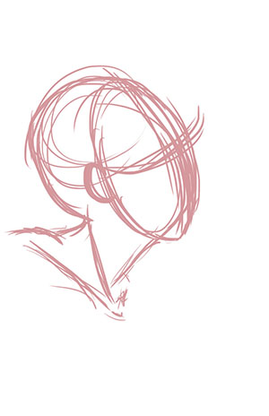
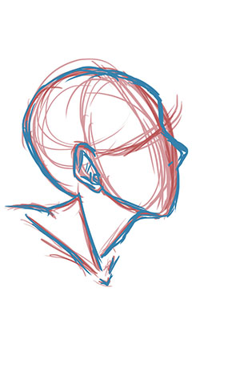
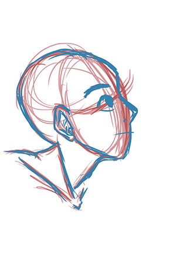
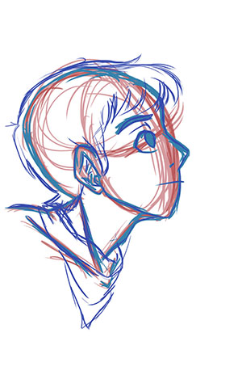

Let's go!
Sketching Process and Details
When sketching something out, I always start with either a light blue or a light red color, that way your linework will stand out better in the final result. I usually use a red to sketch. This does not have to be neat or perfect in any way. The rough sketch only lays out what you actually want to draw. It can be as messy as a mess can be!
   Once I have my rough sketch down, I start adding more detail, such as eyes, hair, clothes, etc. I do that with a blue color. Don't get to carried away with the details just yet. Again, this is just a basic layout of where you want to details to be.
Lineart
Once I have everything in place, I start doing my lineart. For lineart, people usually use black. I prefer to use a light brown color and set the layer that it's on to "multiply".
You'll also want to use fast strokes to get clean and crisp lines. If you mess up on the lineart, don't worry! There is always the undo command (command+z).
(I don't have pictures fot this part.)
Coloring
When coloring, I also set the layer to "multiply" and I put the coloring layers above the lineart layer. I only do the flat colors first. Shading and highlights are done when I touch things up and add a bit more detail.
(I don't have pictures fot this part.)
***Note***
- I always use seperate layers for each color. It's easier for me to keep track of what color I need to change if needed.
Shading and Highlighting
After all the flat colors are down, I can now add shading and highlights. Now, depending on where and what the light source is, shading and highlights will be different.
(I don't have pictures fot this part.)
Final!
And then I have my final result!
(You'll have to forgive me for the lack of pictures I don't have.)
Now, I can either praise the masterpiece I've created or I can go cry in a corner and complain how bad it is.